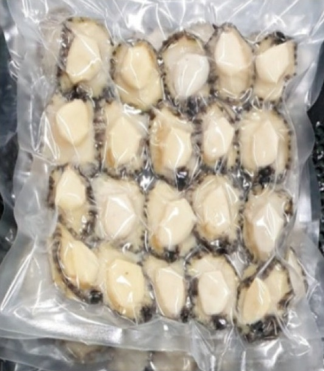

해외 공급

- 일본
- 2024년 9월 일본에 활전복 수출을 시작했습니다.
- 미국
- 유통 파트너를 통해 미국에 제품을 공급해 왔습니다.
- 태국
- 전복죽과 전복미역국 등 일부 제품의 태국 FDA 등록 이력이 있습니다.
- 업소용 공급
- 냉동 자숙 전복 1kg 진공 포장과 기타 제품 규격을 문의하실 수 있습니다.
거래 문의
용가네와 함께하세요
도매 공급, 제품 규격, 수출 및 유통 관련 문의를 받습니다.

거래 문의
도매 공급, 제품 규격, 수출 및 유통 관련 문의를 받습니다.